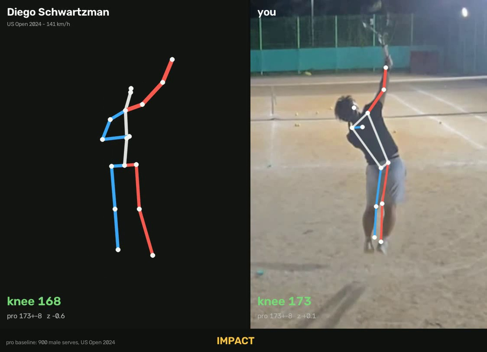
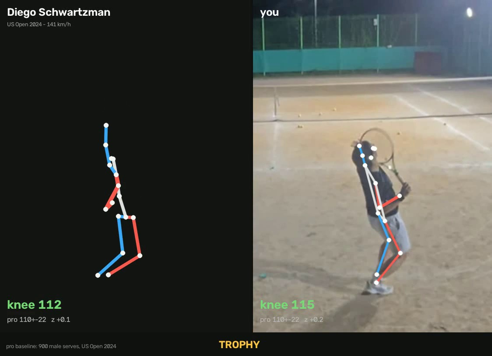
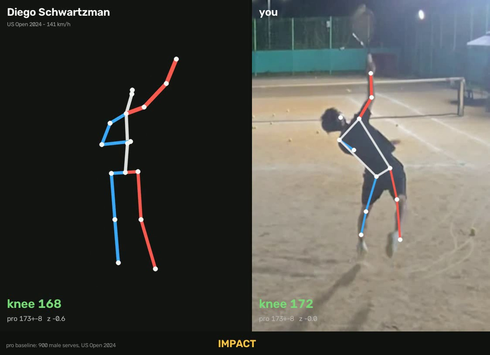
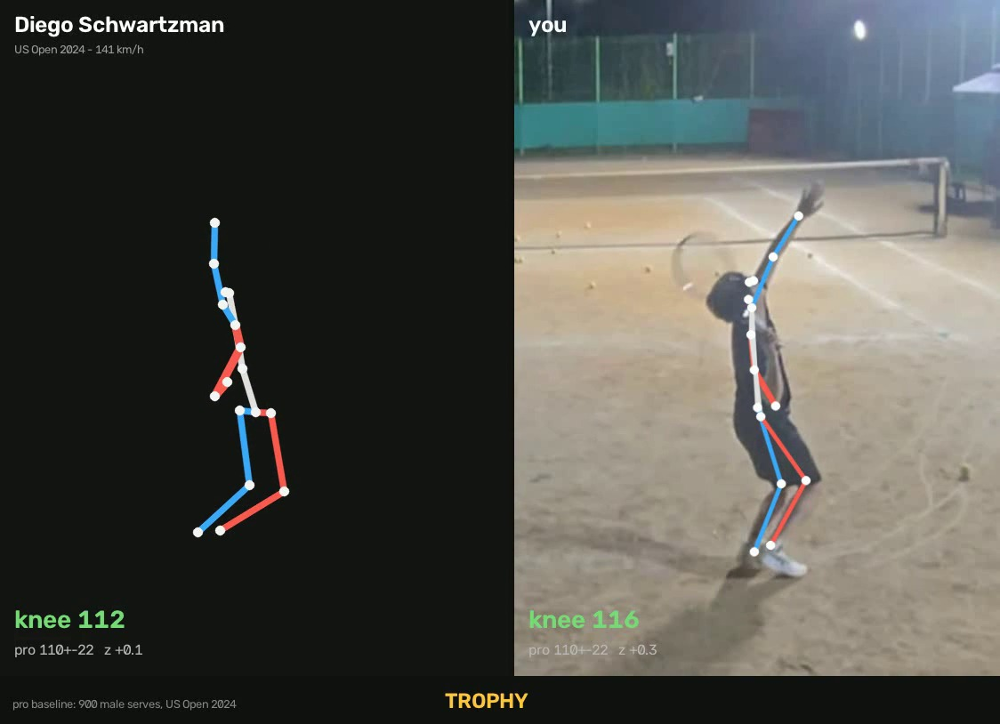

확인01
포핸드 범실이 뒤에서 몰렸습니다
포핸드 범실 10개 중 7개가 베이스라인 뒤에서 나왔습니다.
7 / 10베이스라인 뒤
지표 열 개 중 아홉이 프로 분포 한복판입니다. 하나만 벗어나 있습니다 — 임팩트에서 몸통과 위팔이 이루는 각이 123.0°로, 프로 140.0°보다 17° 낮습니다(하위 12.6%). 팔꿈치는 잘 펴는데(52.9%ile) 어깨에서 팔을 덜 들어올립니다. 펴는 것과 들어올리는 것은 다른 동작입니다.
막대는 각 지표가 프로 평균에서 몇 SD 떨어졌는지(z)입니다. 회색 띠 안(±1 SD)이면 프로들이 흔히 쓰는 범위이고, 밖으로 나갈수록 프로가 잘 하지 않는 자세입니다. 방향이 유리한 쪽으로 벗어난 것은 문제로 세지 않습니다 — 프로보다 깊게 앉거나 더 곧게 펴는 것은 잘하는 것이지 잘못이 아닙니다.
때릴 때 어깨에서 팔을 더 들어올린다. 분포 밖으로 나간 지표가 없고 경계도 이 하나뿐이라, 2·3순위가 없습니다. 나머지 아홉 개는 손대면 오히려 나빠지는 쪽입니다.
보통 이 자리에 세 개를 순서대로 놓습니다. 이번에는 놓을 것이 하나뿐입니다 — 나머지가 이미 프로 범위 안이라 순서를 매길 대상이 없습니다.
때리는 순간 몸통과 위팔이 123.0°를 이룹니다. 프로는 140.0°로, 위팔이 몸통 연장선에 훨씬 가깝게 올라가 있습니다. 하위 12.6%입니다.
팔을 못 펴는 게 아닙니다. 팔꿈치 펴짐은 150.5°로 프로 한복판(52.9%ile)이고, 토스 팔도 177.4°까지 세워둡니다(89%ile, 상위권). 팔은 잘 폈는데 어깨가 덜 올라간 모양입니다 — 펴는 것과 들어올리는 것은 서로 다른 동작입니다.
무릎도 임팩트에서 173.2°로 프로(173.0°)와 사실상 같습니다. 다리는 다 썼는데 그 위에 팔이 얹히지 않은 셈입니다.
타점이 높아집니다. 이건 기하학이라 확실합니다 — 같은 힘으로 쳐도 접점이 높으면 네트 위 여유가 커지고, 서비스 박스로 꽂히는 각도가 생깁니다.
이미 만든 것을 쓰지 못하고 있습니다. 무릎도 프로만큼 펴고, 토스 팔도 프로보다 높이 세우고, 트로피 무릎도 프로보다 깊게 앉습니다. 준비는 다 돼 있는데 마지막 어깨 한 동작에서 높이를 흘리고 있습니다.
임팩트 순간에 정지시키고 위팔과 귀 사이를 보세요. 프로는 위팔이 귀 옆에 붙어 머리·어깨·팔꿈치가 거의 한 줄입니다. 위팔이 어깨 높이 근처에서 옆으로 뻗어 있으면 아직입니다. 팔꿈치가 펴졌는지로는 판정되지 않습니다 — 그건 이미 잘 하고 있습니다.
이 리포트가 측정한 것은 “프로와 어디가 다른가”까지입니다. 위 드릴과 큐는 그 차이를 좁히는 데 흔히 쓰이는 방법이지, 이 데이터에서 도출된 것이 아닙니다. 몸이 다르면 맞는 방법도 다르니, 코치가 있다면 측정 결과를 보여주고 방법은 코치와 정하는 편이 낫습니다.
값은 서브 한 개에서 나왔습니다. 같은 사람이 다음 서브에서 다른 값을 낼 수 있습니다. 아래 ‘다음에 할 것’에 몇 개를 더 찍어야 하는지 계산해 뒀습니다.
고치려다 오히려 망가지는 쪽입니다. 특히 앉는 깊이는 프로 분포가 111.5±22.2°로 매우 넓습니다 — 얼마나 깊게 앉을지는 취향의 영역이고, 지금 값은 정상 범위입니다.
2024 US 오픈 남자 프로의 서브 전량(품질 라벨 2 이상, 3,149개)을 내 영상과 같은 카메라 각도로 투영해 임팩트 팔 들림을 다시 쟀습니다. 아래는 그중 서브 20개 이상을 남긴 44명의 선수별 평균과 5~95% 범위입니다.
앞의 무릎 사례와는 성격이 다릅니다. 여기서는 내 값보다 평균이 낮은 선수가 셋 있습니다 — Tsitsipas(117.9°) · Medvedev(121.3°) · Lehecka(123.0°, 사실상 동률). 즉 “프로는 아무도 이렇게 안 한다”가 아니라 “프로 중에도 있지만 드문 쪽”입니다. 고칠 가치는 있되, 급한 결함으로 읽을 항목은 아닙니다.
회색 막대가 프로 3,149서브의 실제 분포(도수), 세로선이 내 값, 빈 동그라미가 같은 날 같은 코트에서 찍은 연습 상대의 값입니다. 점수가 아니라 위치입니다. 여기 실린 10개는 우리가 가진 프로 클립 3개로 비교 타당성을 검증한 지표만 남긴 것입니다.
프로 3,149서브의 관절별 중앙값 자세와 두 사람의 자세입니다. 전부 골반을 원점에, 몸통 길이를 1로 맞춰 그렸으므로 크기가 아니라 자세만 비교됩니다. 겹쳐보기는 프로와 내 골격을 포개고 관절끼리 선으로 이어 어긋난 양을 보여주고, 펴짐 선은 발목에서 손목까지의 사슬이 얼마나 곧게 뻗었는지를 봅니다. 굵은 파란 선은 라켓을 든 오른팔입니다 — 이번 리포트의 결론이 나온 구간입니다.


겹쳐보기에서 임팩트 때 벌어지는 관절과 펴짐 선의 최대 이탈 지점은 위 그림 아래에 값으로 표시됩니다. 프로 쪽은 관절마다 따로 중앙값을 낸 합성 자세라 실제로 존재한 서브가 아닙니다 — 판정의 근거는 근거 2의 분포이고, 이 그림은 그 차이를 눈으로 보기 위한 것입니다.
지표마다 프로 분포의 z로 바꾸면 선수 한 명이 꺾은선 하나가 됩니다. 회색 44개가 프로, 파란색이 나와 가장 가까운 선수, 빨간색이 나, 점선이 연습 상대입니다. 선끼리 겹치는 구간은 같은 폼, 벌어지는 구간이 차이입니다.
| 가까운 순서 | 나와의 거리 | 팔 들림 뺀 거리 | 상대와의 거리 | 평균 구속 | 서브 |
|---|
Stefanos Tsitsipas가 거리 0.70으로 가장 가깝습니다. 10차원 z 공간에서 0.70이면 지표당 평균 0.2 SD 차이라는 뜻입니다 — 프로 선수들끼리의 거리와 같은 수준입니다. 팔 들림 하나를 빼면 0.67로 거의 변하지 않는데, 나머지 아홉 개가 이미 붙어 있어서 그 하나를 빼도 남는 거리가 없기 때문입니다.
공교롭게도 Tsitsipas는 근거 1에서 팔 들림 평균이 가장 낮은 선수(117.9°)이기도 합니다. 같은 방향으로 치우친 폼이라 가까이 잡힌 면이 있습니다. 가장 먼 선수는 Alexander Zverev(3.03)입니다.
10개 지표를 같은 무게로 더한 기하적 거리일 뿐이고, 어느 지표가 더 중요한지는 반영돼 있지 않습니다. 선수 중앙값과의 거리라서 그 선수의 서브마다 있는 편차도 지워지고, 내 쪽은 서브 한 개라 편차가 아예 없습니다 — 그래서 이 거리는 실제보다 가깝게 나오는 방향으로 치우칩니다. 참고할 영상을 고를 때 쓰는 값이지, 실력이나 구속을 뜻하지 않습니다.
이 항목은 보통 리포트에 실리지 못합니다. 슬로모나 편집이 섞인 영상에서는 초·각속도를 계산해도 의미가 없어 계산 자체를 막아 두기 때문입니다. 이번 영상은 무편집 실시간 촬영본이라 잴 수 있었고, 프로 데이터셋도 전 행 60fps 실시간이라 같은 자로 비교됩니다.
서두르지도 늘어지지도 않습니다. 프로 3,149서브의 중앙값이 0.40초이고 내 값도 0.40초(47.5%ile)입니다. 연습 상대도 같은 0.40초였습니다. 다만 30fps로 찍혀 한 프레임이 0.033초이므로, 이 값의 해상도는 ±0.03초입니다. 0.40과 0.43의 차이는 읽지 마세요.
지금 값은 서브 1개에서 나온 단일 측정입니다. 몇 개를 더 찍어야 하는지는 지표마다 다르고, 프로들이 자기 서브들 사이에서 얼마나 흔들리는지(개인 SD)로 계산됩니다. 서브 20개 이상을 남긴 44명의 개인 SD 중앙값을 썼습니다.
| 지표 | 프로 개인 SD | 내 평균 ±3° | 차이를 절반 줄였는지 판정 |
|---|
고치려는 팔 들림은 18개면 판정됩니다. 프로와의 차이가 17°로 크기 때문입니다. 반대로 임팩트 무릎은 이미 프로와 0.2° 차이라 판정에 수천 개가 필요한데, 그건 애초에 잴 필요가 없는 항목입니다.
그래서 5~10개면 변화 추적, 20개면 절대값까지 ±3° 안에서 확정됩니다. 그 이상은 낭비입니다 — 남는 오차가 개수가 아니라 아래 것에서 오기 때문입니다.
시점 추정의 ±10° 오차는 계통 편향이라 평균을 내도 사라지지 않습니다. 100개를 찍어도 그대로 남습니다. 대신 20개를 같은 자리·같은 화각에서 한 번에 찍으면 그 편향이 20개에 공통으로 들어가, 세션 간 비교는 정확해집니다. 이번 영상은 이미 실시간·삼각대 고정이라 조건이 좋습니다 — 같은 자리에서 20개만 더 찍으면 됩니다. 다만 인물이 화면에서 더 크게 잡히도록 당겨 찍으면 각도 정밀도가 올라갑니다.
솔직히 말하면 손댈 데가 별로 없습니다. 열 개 중 아홉이 프로 범위 안이에요. 이런 경우 흔치 않습니다.
준비는 아주 좋습니다. 무릎 깊이 접고, 토스 팔은 프로보다 더 높이 세워두고, 때릴 때 무릎도 프로만큼 폅니다. 상체 젖힘도 프로 한복판이에요. 여기까지는 정말 건드릴 게 없습니다.
문제는 딱 마지막입니다. 팔꿈치는 폈는데 어깨를 안 올렸어요.
펴는 거랑 올리는 건 다른 동작입니다. 지금은 앞의 것만 하고 있습니다.
당장 오늘 코트에서 하나만 한다면 이겁니다 — 공을 친다고 생각하지 말고, 라켓으로 닿을 수 있는 제일 높은 데를 긁는다고 생각하세요. “팔을 들어야지” 하면 잘 안 됩니다. 긁으려고 하면 어깨가 저절로 따라 올라갑니다.
안 되면 팔이 아니라 토스를 의심하세요. 토스가 몸쪽이거나 낮으면 팔을 올릴 자리가 없어서 어깨가 알아서 내려옵니다. 반 라켓만 앞·위로 보내보세요.
하나만 더. 앉는 깊이는 신경 쓰지 마세요. 프로들 사이에서도 이 값은 111±22°로 제일 넓게 흩어집니다. 취향의 영역이에요. 모두가 지키는 건 끝까지 밀어 올린다는 것 하나뿐이고, 다리 쪽은 이미 하고 있습니다. 남은 건 팔입니다.
같은 날 같이 친 상대분도 똑같은 지점에서 걸립니다(117.1°, 하위 8.8%). 둘이 같은 습관을 공유하고 있을 수 있어요 — 서로 임팩트 순간을 찍어주면 가장 빨리 잡힙니다. 다만 각자 서브 한 개씩만 잰 값이라, 20개쯤 찍어 다시 재보는 게 먼저입니다.
팔 — 칠 때 팔 들림 123.0° (프로 140.0±22.3, 하위 12.6%). 반면 칠 때 팔꿈치 펴짐은 150.5° (52.9%ile)로 한복판입니다. 펴는 것과 들어올리는 것이 갈립니다.
다리 — 임팩트 무릎 173.2° (프로 173.0±8.2, 36.9%ile). 트로피 무릎 115.3° (63.7%ile), 앉았다 펴는 양 63.3° (34.8%ile). 전부 정상 범위입니다.
왼팔 — 트로피 토스 팔 들림 177.4° (프로 163.0±20.8, 89%ile), 토스 팔 펴짐 173.1° (60.8%ile). 프로보다 잘 세워둡니다.
시간 — 트로피 f35 → 임팩트 f47, 12프레임 = 0.40초. 프로 3,149서브 중앙값 0.40초 (47.5%ile). 실시간 촬영본이라 유효합니다.
연습 상대 — 팔 들림 117.1° (8.8%ile), 상체 젖힘 7.1° (33.9%ile), 트로피 팔꿈치 154.2° (90%ile). 자세한 것은 ‘두 사람 비교’ 탭에 있습니다.
닮은 선수 — Tsitsipas 0.70 · Virtanen 1.09 · Borges 1.20. 10차원 z 거리이고, 지표당 0.2 SD 수준입니다.
기준 분포 · 2024 US Open 남자 서브 3,149개 / 55명 (quality_label ≥ 2) — UVA Tennis Serve Analysis Dataset, CC BY 4.0. 선수별 표는 서브 20개 이상인 44명.
측정 방식 · 데이터셋의 3D 자세를 내 영상과 같은 카메라 방위각으로 투영해 2D끼리 비교합니다. 내 영상을 3D로 리프팅하는 반대 방향은 깊이 모호성으로 실패해(2D 154° vs 3D 35°) 폐기했습니다.
한계 · 값은 서브 1개에서 나온 단일 측정입니다. 원본에서 인물이 세로 약 215px이라 300×452 영역을 잘라 2배 확대해 관절을 뽑았고, 그만큼 좌표 잡음이 각도에 실립니다. 5° 이하 차이는 의미가 없습니다. 시점 추정에 ±10° 오차가 있고, 이벤트 프레임에 ±1프레임 오차가 있습니다. 라켓 속도·프로네이션·공 속도·회전·코스는 측정하지 않으며, 부상 위험에 관한 언급은 의학적 소견이 아닙니다.
측정과 처방의 구분 · 이 리포트가 데이터로 말할 수 있는 것은 “프로 분포에서 어디가 얼마나 다른가”까지입니다. ‘고치는 법’의 드릴과 큐는 그 차이를 좁히는 데 쓰이는 일반적인 코칭 방법이며, 이 데이터에서 도출된 것이 아닙니다.
프로 기준 데이터가 아직 없어 폼 비교는 제공하지 않습니다. 경기 영상에서 확인 가능한 위치와 결과부터 준비하고 있습니다.
프로 폼 비교 대신 리턴 성공률, 착지 구역, 범실 위치처럼 영상에서 직접 확인되는 값부터 제공합니다.
비교 데이터가 쌓이기 전까지 네트 위치와 포인트 결과를 중심으로 보여줄 예정입니다.
이름과 수치는 화면 예시를 위한 가상 데이터입니다. 에러율은 낮을수록, 나머지 비율은 높을수록 좋습니다.
포핸드 범실 10개 중 7개가 베이스라인 뒤에서 나왔습니다. 반대로 네트에 먼저 들어간 포인트는 17개 중 12개를 이겼습니다. 원인을 추정하지 않고, 영상에서 확인되는 위치와 결과만 정리했습니다.
일반인 경기는 짧기 때문에 승률 하나보다 같은 상황에서 반복된 선택과 결과를 봅니다.
포핸드 범실 10개 중 7개가 베이스라인 뒤에서 나왔습니다.
앞으로 들어간 포인트는 71%, 뒤에 남은 포인트는 39%를 이겼습니다.
8개 중 7개가 들어갔습니다. 지금처럼 깊게만 보냅니다.
막대는 해당 샷 중 좋은 결과와 직접 범실의 비율입니다. 회색은 중립적으로 랠리가 이어진 샷입니다.
게임별 숫자는 호영의 직접 범실 수입니다. 7·8번째 게임에서 포핸드 범실 5개가 연속으로 나왔지만, 네트 플레이로 마지막 두 게임을 가져왔습니다.
전체 범실 수와 타구 위치.
현재 · 10개들어간 포인트 수와 승률.
현재 · 12 / 17코트에 들어간 리턴 수.
현재 · 7 / 8위 숫자는 화면 구성을 보여주기 위해 만든 가상값이며 실제 영상 분석 결과가 아닙니다. 1세트는 선수의 장기 실력을 확정하기엔 짧지만, 같은 경기 안에서 여러 번 반복된 상황–선택–결과를 찾는 데는 쓸 수 있습니다. 고객용 리포트에서는 자동 판정 뒤 사람이 영상을 검수하고, 표본이 5회 미만인 항목은 결론 대신 관찰로 표시합니다.
가상 비교군 · 동호인 복식 1세트 480경기를 가정한 데모 분포. 실제 서비스에서는 성별·구력·복식 수준·코트 종류가 비슷한 경기끼리 비교합니다.
분석 단위 · 포인트 시작과 종료, 샷 종류, 타구 위치, 포지션, 결과를 기록하고 선수별로 집계합니다. 스코어만이 아니라 반복되는 패턴을 코칭 우선순위로 바꿉니다.
hoyoung(밝은회색 반바지)과 연습 상대(검은 반바지)의 서브를 하나씩 잘라 같은 자로 재고, 각각을 프로 3,149서브 분포 위에 올린 백분위로 비교합니다. 같은 영상·같은 카메라라서 촬영 조건이 통제된 드문 비교입니다.
둘 다 임팩트 팔 들림에서 걸립니다. hoyoung 123.0°(12.6%ile), 상대 117.1°(8.8%ile). 열 개 중 두 사람이 함께 프로 아래쪽으로 치우친 유일한 항목입니다. 같은 코트에서 같이 배운 습관일 수 있습니다.
갈리는 곳은 왼팔입니다. 토스 팔 들림이 hoyoung 177.4°(89%ile) 대 상대 154.0°(17.2%ile)로 23° 차이납니다. 상대 쪽은 트로피 팔꿈치가 154.2°로 거의 펴진 채 앉는 점도 다릅니다(90%ile) — 다만 이 지표는 프로 분포가 83.5±48.5°로 매우 넓고 트로피 프레임 ±1에 크게 흔들려, 숫자보다 영상 확인이 먼저입니다.


촬영 조건이 같다는 것은 큰 장점이지만, 두 사람 다 서브 한 개씩입니다. 한 사람 안의 서브별 편차(프로 개인 SD로 보면 지표당 6~40°)가 두 사람 차이보다 클 수 있습니다. 여기서 둘 다 같은 방향으로 벗어난 항목(팔 들림)은 신뢰할 만하지만, 둘이 갈리는 항목은 개인차인지 그날 그 한 개의 편차인지 이 데이터로는 구분되지 않습니다. 두 사람 다 서 있는 위치가 조금 달라 시점 오차도 완전히 같지는 않습니다.
올라온 파일은 서브 40여 개가 이어지는 1280×720 · 13,355프레임 통영상입니다. 이대로는 분석이 안 됩니다 — 화면에 사람이 둘이라 관절 추적이 옮겨붙고, 이벤트 검출은 서브 한 개를 전제로 돌아갑니다. 아래가 실제로 거친 단계입니다.
검사 5·6번이 걸렸습니다. 열 개 지표는 그대로 분석하되, 5° 이하 차이는 읽지 않습니다. 다음에 찍을 때 인물이 화면에 더 크게 들어오도록 당겨 찍으면(또는 코트 가까이에서 찍으면) 이 제약이 풀립니다.